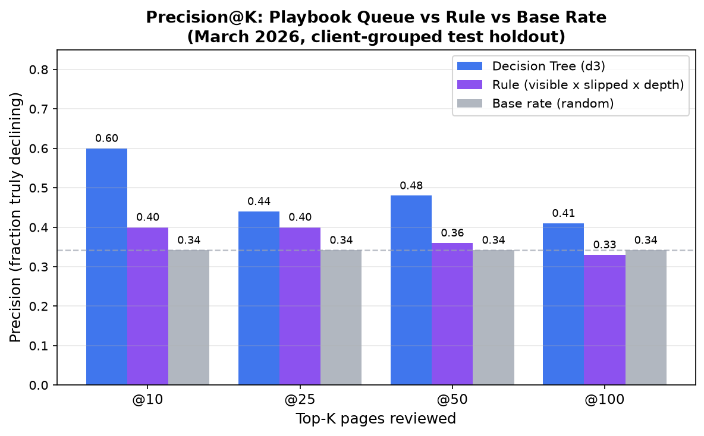
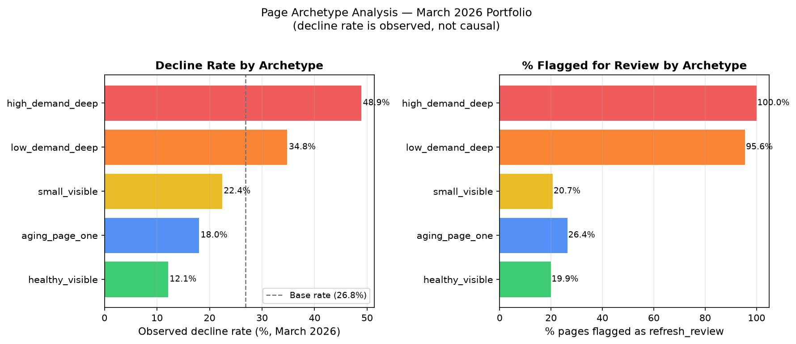
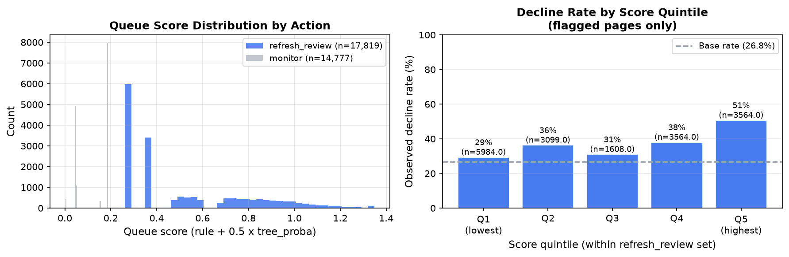

01 Introduction & Problem Statement
An SEO agency managing 30 client accounts can have over 30,000 indexed pages in its portfolio at any moment. A single account can carry 7,000 pages. No content team can review them all in a sprint cycle. The real question is not which pages are declining — that is answerable from analytics — but which ones should a human look at first, given limited time this week?
This is a triage and ranking problem, not a prediction problem. The output is a ranked queue with reason codes, designed to focus human editorial judgment. A wrong recommendation has a real cost in both directions: a false positive wastes writer hours on a page that was already fine; a false negative lets a genuinely declining page lose traffic quietly until the next audit cycle catches it.
Prior to this work, the standard approach was either gut feel, recency (oldest publish
date first), or a hand-coded rule based on position and volume thresholds. The
reference pipeline in this repo (scripts/01–05) establishes that a
trained model can outperform a hand-written rule on a random holdout. The question
we pursue here is whether that advantage holds when we use a client-grouped
holdout — the deployment-realistic scenario where the model scores pages for
clients it has never seen in training.
This is FlyRank's content refresh triage problem in its practical form: an SEO platform managing hundreds of client websites needs a repeatable, auditable method to surface the highest-priority pages for editorial action each sprint — pages where a timely refresh or expansion can recover lost search impressions before traffic erosion compounds. Our findings show that a shallow, interpretable model trained on position and engagement signals can outperform expert-designed rules on new clients, while making the reasons for every recommendation transparent to editors.
02 Data
Source
All data comes from the FlyRank internship warehouse
(hf://datasets/FlyRank/internship-warehouse), a research dataset
derived from real production search analytics. We used two tables:
fact_content_daily_performance/month=2026-03/*.parquet— daily GSC and GA4 metrics per page per day, March 2026.dim_content.parquet— page-level metadata including content creation and last-update dates.
The warehouse covers data described as equivalent to roughly 79 million row-level observations across its full history. We work with one month's page-level aggregate (March 2026), which yields 32,596 rows after filters.
Date window & population
Snapshot date: 2026-03-31. We aggregate all daily rows in March 2026
to one page-level record per (client_hash_id, content_hash_id).
The label is computed from the first vs. second half of the month — see Methodology.
We require ga4_data_available IS TRUE AND gsc_data_available IS TRUE
to ensure both data sources are present. Pages with fewer than 100 total GSC impressions
in March are excluded (too little signal to reliably define a decline trend within a
single month). Pages with a missing avg_position are dropped (171 rows, <1%).
What was excluded and why
trend_directionandtrend_pct— these columns define the label; using them as features would be direct leakage.- Raw page URLs and client domain names — the dataset uses anonymized hash IDs (
client_hash_id,content_hash_id) throughout. No identifying information appears anywhere in this analysis. - April 2026 data — used only in the validation audit (w06) to test temporal generalization. It is not part of the training or test split.
content_updated_dateas a raw date field — forward-dated update timestamps can introduce temporal leakage (a page appearing "recently updated" at snapshot time may reflect post-hoc edits). We clip toGREATEST(days_since_last_update, 0)and verified the fix in w06.
03 Methodology
Label definition
We define is_declining_label = 1 when a page's GSC impressions in the
second half of March 2026 (days 16–31) are strictly less than in the first half
(days 1–15). This is a within-month proxy: it captures pages whose impression
trajectory was already negative within the observation window.
Features (the contract)
Six features, all computable at snapshot time with no leakage:
| Feature | Description | Transformation |
|---|---|---|
content_age_days | Days since page was created (at 2026-03-31) | Raw days |
days_since_last_update | Days since last content update, clipped ≥ 0 | Clipped (temporal leak fix) |
avg_position_mar | Mean GSC position in March 2026 | Raw; nulls dropped |
log_gsc_impressions_mar | Log-transformed total impressions | log1p(impressions) |
engagement_rate_mar | GA4 engaged sessions / sessions × 100 | NaN filled with 0; has_engagement flag added |
has_engagement | Binary: whether GA4 engagement data is available | Indicator |
Baseline rule
The rule baseline (visible × slipped × depth) flags a page when:
gsc_impressions ≥ 500 (visible), position is ≥ 10 (deep), and
the page has any engagement (slipped from page-one). Reason code:
position_risk_with_demand. 8,490 pages flagged on the full March slice.
Model
Three models were compared (logistic regression, decision tree depth-3, random
forest). The decision tree with max_depth=3,
class_weight='balanced', and min_samples_leaf=50 was
selected as the keeper model based on precision@50 on held-out clients.
Random seed: 42.
Validation design
Client-grouped holdout: 30 clients are randomly split by client (not by page) into 24 training clients and 6 test clients (80/20). No page from a test client appears in training. This prevents the model from memorising client-specific patterns and approximates deployment: the model will score pages for new clients it has never seen.
Repeated splits: The split is repeated with 5 different random seeds (0–4) and results averaged. This reduces dependence on a single lucky or unlucky draw — the averaged metric gives a more stable estimate of true performance.
Leakage checks
trend_directionandtrend_pctexcluded from all feature sets — confirmed in w03 and w06.- Synthetic leakage injection test: adding the label column directly produces AUC = 1.0, precision@50 = 1.0, confirming that leakage is detectable and not present in the honest feature set (which achieves AUC ≈ 0.50 on the grouped holdout).
days_since_last_updateforward-date clamp applied after discovering that raw update timestamps could reflect post-snapshot edits.- Random holdout (inflated test) vs. grouped holdout comparison reveals the difference: the random split produces artificially high metrics (RF AUC 0.738) because it leaks client context. We report only grouped-split numbers as the honest figures.
04 Results
Model vs. baseline comparison — grouped holdout (seed 42)
| Model | p@10 | p@25 | p@50 | p@100 | ROC-AUC |
|---|---|---|---|---|---|
| Base rate (random guess) | 0.342 | 0.342 | 0.342 | 0.342 | — |
| Rule baseline (visible × slipped × depth) | 0.40 | 0.40 | 0.36 | 0.33 | 0.433 |
| Logistic Regression | 0.40 | 0.32 | 0.30 | 0.33 | 0.492 |
| Decision Tree (depth 3) ← keeper | 0.60 | 0.44 | 0.48 | 0.41 | 0.501 |
| Random Forest | 0.30 | 0.24 | 0.22 | 0.30 | 0.515 |
Repeated 5-seed means (stability check)
| Model | Mean p@50 (5 seeds) | Mean AUC (5 seeds) | Mean base rate |
|---|---|---|---|
| Rule baseline | 0.232 | — | 0.183 |
| Decision Tree (depth 3) | 0.304 | 0.555 | 0.183 |
| Logistic Regression | 0.300 | 0.510 | 0.183 |
| Random Forest | 0.232 | 0.578 | 0.183 |
The single-seed result for the decision tree (p@50 = 0.48) is notably higher than the 5-seed mean (0.304), with a range of 0.10–0.46 across seeds. This variance reflects that with only 30 clients, split composition matters: some draws leave easier or harder test clients. We treat 0.304 mean p@50 as the honest headline — meaningfully above the rule mean of 0.232 and the base-rate mean of 0.183, but with high uncertainty.
Chart: Precision@K on held-out test clients

Chart: Page archetype breakdown

Chart: Queue score distribution

refresh_review rows beyond
the rule-only queue.
Key finding: position is the signal; volume is only a gate
Signal audit (w04) measured decline rate by position bucket and impression tier independently. Position depth shows a monotone relationship: pages at positions 1–3 decline at 13.8%; at positions 21–50, the rate rises to 42.9%. Volume (impression count) is nearly flat across tiers (25–28% decline rate), confirming that impressions function as a demand gate (filtering out zero-traffic pages) but carry no independent decline signal beyond that threshold.
05 Limitations & Honest Framing
Every result in this paper comes with conditions that a reader should hold in mind:
-
Within-month label proxy.
is_declining_labelcaptures whether impressions fell from the first half to the second half of a single month. It is not a confirmed long-run trend. A page with a within-month dip may recover the following week. The label is a pragmatic proxy for "needs attention," not a ground-truth measure of SEO health. - Single month of data. We train and evaluate on March 2026 only. The validation audit (w06) tested the model on April 2026 data and found performance degrades — particularly with the time-aware split (tree p@50 drops from 0.48 to 0.34 on the grouped-time split). Seasonal patterns, algorithm updates, or structural shifts could invalidate the feature relationships we observed.
- High variance from small client count. 30 clients, with 6 held out, means split composition has an outsized effect on results. The 5-seed mean p@50 of 0.304 carries a range of 0.10–0.46 — a 4× spread. Performance on any new client portfolio could fall anywhere in this range.
- No causal design. We observe an association between search position and within-month impression change. We cannot claim that deeper position causes decline, or that refreshing a flagged page will improve its ranking. No experiment (A/B refresh test vs. untouched control) was run. This tool supports triage decisions; it does not predict the outcome of a content refresh.
- No generalisation claim beyond this portfolio. The dataset covers one anonymized portfolio for one month. Results may not transfer to different industries, page types, languages, or client sizes.
-
Content staleness signal was absent in this window.
days_since_last_updatehad a median of 0 in March 2026 — most pages were recently touched. Staleness is included in the feature contract because it is theoretically important and expected to activate in older data windows. - The model does not predict Google's algorithm. It predicts patterns in this dataset that correlate with within-month impression change. It makes no claim about ranking logic.
06 Ranked Recommendations
The action playbook maps page archetypes to editorial actions, in priority order. A content strategist can pull the top-N rows from the ranked queue each sprint cycle and schedule work by archetype. Confidence and limits are stated for each.
-
1Review high-demand deep pages immediately UrgentPages with ≥ 3,000 impressions and avg. position ≥ 10 — 3,245 pages with a 48.9% decline rate, all rule-flagged. These carry the highest traffic risk. Action:
refresh_reviewwith intent audit + SERP check. Human must verify query intent is still being served. -
2Work the low-demand deep queue in batches Medium10,787 pages at position ≥ 10 with < 3,000 impressions; 34.8% decline rate, 95.6% rule-flagged. Lower immediate traffic risk than #1, but far larger volume. Batch in groups of 25–50 at a time; confirm the target query still has live search demand before investing refresh effort.
-
3Cap reviews at the top 25–50 rows per sprint ProcessPrecision drops from 0.48 at the top 50 to 0.41 at the top 100. Adding rows beyond 50 per sprint means roughly equal true and false positives. Limit sprint scope to maintain quality; re-score the queue each cycle rather than working through a stale ranked list.
-
4Include model-only flagged pages as secondary candidates Secondary9,329 pages score ≥ 0.5 on the decision tree but fall below the rule threshold. These are not rule-flagged (position < 10 or impressions < 500) but the model finds a pattern worth surfacing. Include them as a second tier after the rule queue is worked through — or filter to the archetype
aging_page_one(position < 10, age > 180 days, low engagement), which carries a 22.4% decline rate. -
5Retrain the model when conditions shift MaintenanceTrigger retrain if: (a) base rate shifts > 5pp from 26.8%; (b) model age exceeds 2 months; or (c) p@50 on a recent validation slice drops below 0.30. The within-month label proxy is cheap to recompute each month with a new warehouse partition scan.
What should NOT be automated
The ranked queue is a decision-support tool, not an automation trigger. An editor must:
- Confirm query intent is still live before committing refresh effort.
- Check whether a position change reflects a SERP feature displacement (featured snippets, knowledge panels) vs. a genuine ranking drop — the model cannot distinguish these.
- Make the final call on whether to refresh, expand, protect, prune, or monitor a given page.
07 Reproducibility
All analysis code is in the public GitHub repo. Each notebook below runs
end-to-end from a fresh kernel (requires a HF_token in .env
for warehouse reads).
Notebooks
How to re-run
# 1. Clone the repo
git clone https://github.com/iaamhammad/FlyRank_Internship.git
cd FlyRank_Internship
# 2. Install dependencies
pip install -r requirements.txt
pip install nbformat nbclient ipykernel jupyter
# 3. Set up your HF token (READ access required)
echo "HF_token=hf_your_token_here" > .env
# 4. Run the reference pipeline (offline, no token needed)
python scripts/run_all.py # ~1 min
# 5. Run any work notebook
jupyter nbconvert --to notebook --execute --inplace \
work/notebooks/w07_action_playbook.ipynbSeeds and determinism
All experiments use RANDOM_STATE = 42 as the primary seed.
Repeated-split experiments use seeds 0–4 in sequence. Results may vary slightly
across scikit-learn versions due to internal algorithm changes; the metric receipts
in work/outputs/ record the values produced by the committed notebook runs.
Metric receipts
| File | Contains |
|---|---|
work/outputs/w04_baseline_metrics.json | Rule baseline precision@K, row counts |
work/outputs/w05_model_metrics.json | All model comparisons, repeated-split means |
work/outputs/w06_validation_audit_metrics.json | Before/after splits, leakage injection, time-aware results |
work/outputs/w07_playbook_metrics.json | Queue stats, archetype breakdown, retrain triggers |
08 Acknowledgments & Data Credit
This research was conducted as part of the FlyRank ML Internship Program. All search analytics data used in this study is sourced from the FlyRank ML Internship dataset, a research dataset derived from real production search performance data. Dataset access was provided by FlyRank.
Crediting your data source is standard research practice. The dataset is hosted at
hf://datasets/FlyRank/internship-warehouse on the Hugging Face Hub.
Internship program documentation, dataset description, and usage terms are available
through the FlyRank
internship portal.
hf://datasets/FlyRank/internship-warehouse
· Partition used: fact_content_daily_performance/month=2026-03